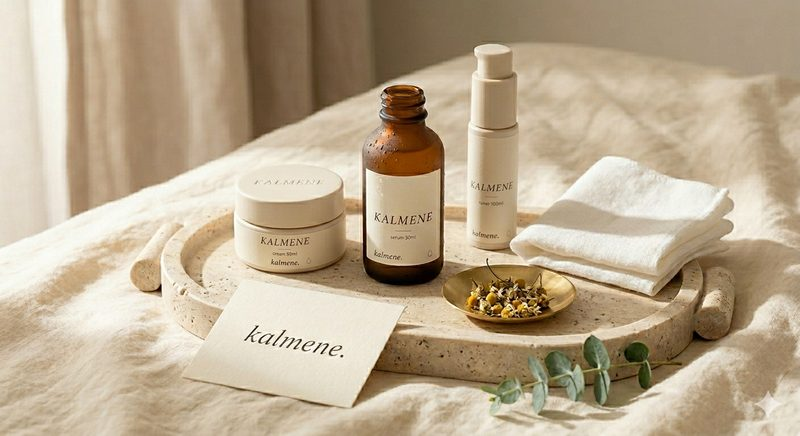
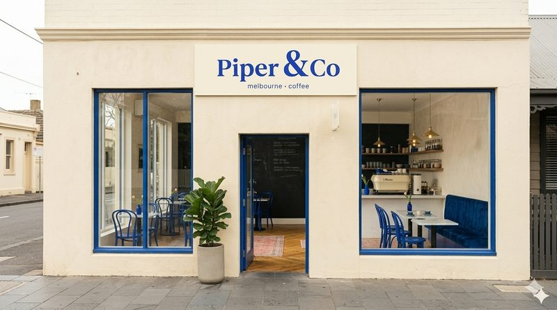
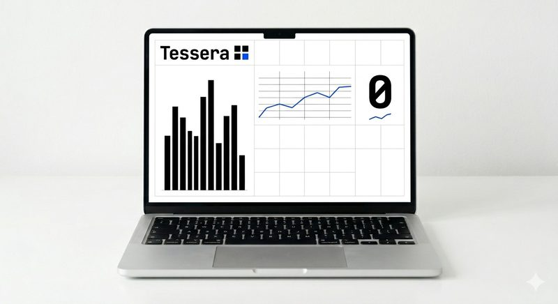

3 hero compositions. Each uses iOS-style color washes + glass + a real Memphis move (wordmark as background pattern, not random shapes). Plus a new case study card design.
A creative studio for the AI age. Brand identity, design systems, content, social, and web — built end-to-end on AI-native workflows, delivered at mid-market pricing.
Custom multi-episode reel series, written and produced for clients. See the work →
A creative studio for the AI age. We turn founders' rough ideas into brand systems that ship — not slide decks that don't.
The Series — custom multi-episode reel series, written and produced for clients. Not a one-off. A run.
A creative studio for the AI age. We turn founders' rough ideas into brand systems that ship.
Custom multi-episode reel series, written and produced for clients. See the work →
Glass frame + image inside. The image is the content, the glass is the surface. Pop-color shadow on the frame, not the image.

Brand system for a Dubai skincare line that wanted quiet confidence.

A Memphis-coded Melbourne cafe. The design is the marketing.

A SaaS brand that needed to feel like a creative studio, not a dashboard.